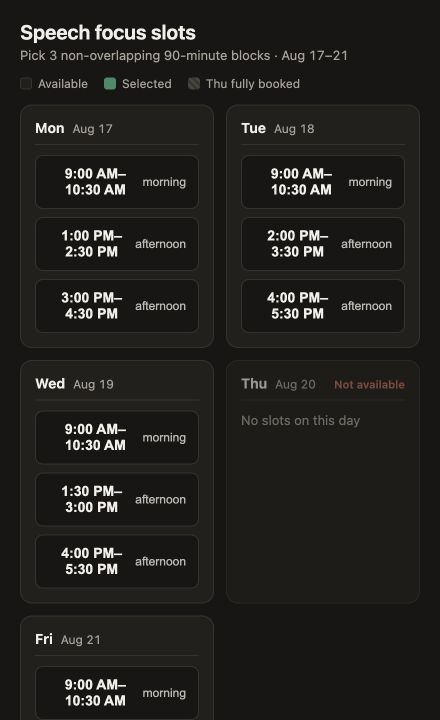

 An interface generated for this task
为当前任务生成的界面
An interface generated for this task
为当前任务生成的界面
One task
InterfaceThe Agent makes the constraints visible
Task stateConfirmed choices return to the task
Next actionCalendar still waits for approval
“Find 3 focus slots. Let me choose before creating events.”
Availability, conflicts, and the 3-slot limit become directly operable.
After the user saves three, a later turn can read them without another list.
The Agent can continue from the saved choice without credentials entering the UI.
一个任务
界面Agent 把约束摆到面前
任务状态选中的 3 个时段回到任务
下一步行动Calendar 仍要先经过授权
“找出 3 个专注时段，先让我选，再写进日历。”
空闲、冲突和 3 个时段的限制，变成可以直接操作的页面。
Agent 后续轮次读取保存结果，不用让用户再列一遍。
Agent 可以接着使用保存结果，凭据不会进入生成代码。